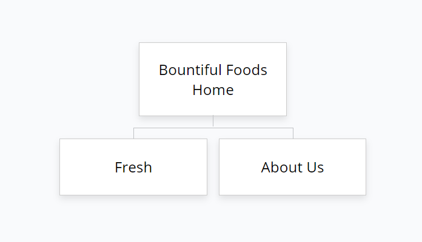

Site Name
Bountiful Foods
Domain
www.bountifulfoods.com
Logo
Site Purpose
To provide the target audience with information about the company as a trustworthy organic option, a convenient way to order drinks, and practical contact information.
Site Map

Target Audience
Personas
Dale Westbrook
- Age: 38
- Gender: Male
- Family Status: Married with 2 kids
- Education: College Degree
- Job Title: Director
- Interests: Running, Tennis, Golf, Reading
Mari Dunning
- Age: 23
- Gender: Female
- Family Status: Single
- Education: some college
- Job Title: Medical Technician
- Interests: Meditating, Hiking, Yoga, Camping
Scenarios
Scenario 1
Dale is a father of two young children who enjoys running and staying healthy. He has read research on the benefits of organic products for young children and his looking for a farm-fresh option for his family. He finds the website via a google search and sees the home page and the description of the produce from local farms. He then clicks the Fresh call to action to order a drink and give it a try.
Scenario 2
Mari is a young single woman who has grown up eating organic and doing yoga. She recently found out information that her regular produce supplier, a large chain, has shady business practices and wants to look for an authentic organic produce shop. She sees the homepage and sees the About Us page. She sees that Bountiful Foods is a small business who works directly with reputable organic farmers. She finds the location on the google map.
Scenario 3
Christina Nguyen has once again found empty shelves at her local grocery store due to ecoli contamination and recalls. Needing produce for a recipe, she searches for a reliable provider of clean produce and finds the site. She sees the about us page and sees that our location is close by.
Scenario 4
Nikita Vasquez is a mother of 4 children who spends a good portion of her food budget on produce every month. She is a business owner and understands the value of buying locally and supporting small business. She sees on the homepage that Bountiful Foods works with local farmers. She clicks on the About Us page and sees the history of this small business and finds the location on google maps.
Scenario 5
Trenton Merrick is a 31 year old married man who is visiting southern california with his wife. They both eat healthy and look for organic options when possible. In the mood for a smoothie during their travels on a warm day they see the home page and the call to action to create a drink. They click on the call to action button and submit an order for a drink.
Color Scheme and Typography
| Heading 1 | Montserrat Alternates | #000000 | Sample |
| Heading 2 | Montserrat Alternates | #000000 | Sample |
| Heading 3 | Montserrat Alternates | #000000 | Sample |
| Paragraph | Inter | #F5F5F5 #000000 |
Sample |
| Action Item | Inter | #feec76 #93c754 |
Sample |
| Accent Color | #e00d11 | ||
| Accent Color | #93c754 |